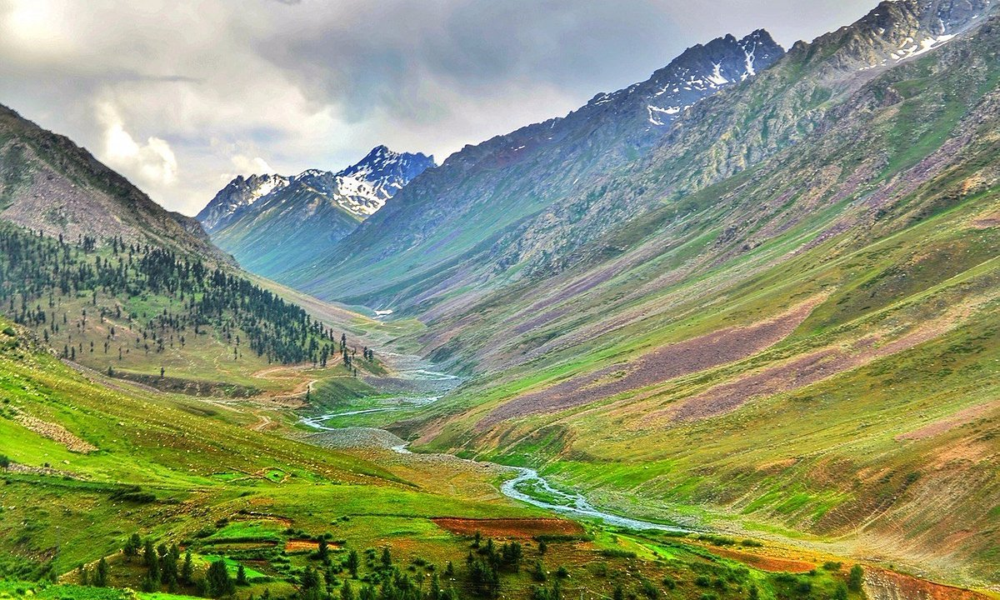
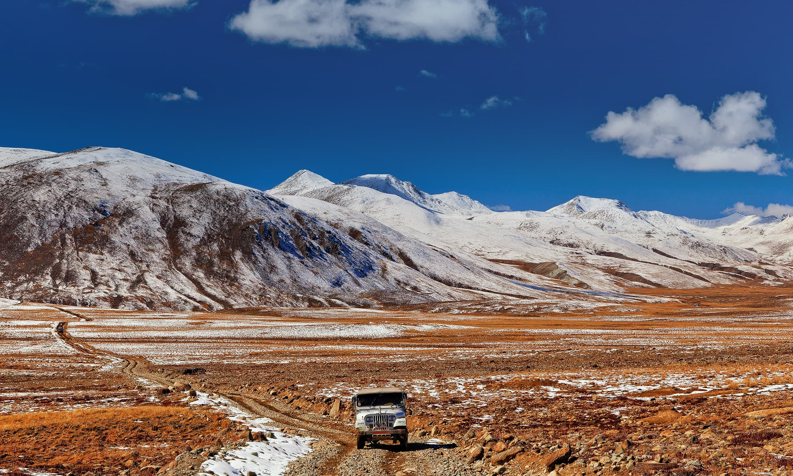

Deosai Mountains, range in the Himalayas in the northern Indian subcontinent. The mountains lie in the<
central Kashmir region, mostly within the Northern Areas (in the Pakistani-administered sector of Kashmir).
The range extends for 120 miles (190 km) from the Indus River bend at Bunji to the Karcha (Suru) River,
which separates the range from the Zaskar Range.
The main body of the Deosai Mountains consists of both Precambrian sedimentary rock (formed more than 540
million years ago) and younger granite bodies. Several peaks reach elevations of more than 18,000 feet
(5,500 metres). The mountains rise above the high Deosai Plateau, averaging some 13,000 feet (4,000 metres)
in elevation. The Deosai Basin lies between mountain ranges; it possesses steep sides and a level floor and
appears to be an ancient cirque (deep steep-walled recess in a mountain, caused by glacial erosion). The
terrain of the Deosai Mountains is rugged and almost devoid of human population. The Burji Pass lies southwest of Skardu, one of several towns
lying at the foot of the mountains.
Deosai Mountains

| Deosai Mountains | |
|---|---|
|  | |
| Highest Peak | |
| Peak | Katasiri |
| Location | Pakistan |
| Elevation | 16 598 ft |
| Coordinates | 34.901741N 75.536719E |
| Geography | |
| Countries | Pakistan , India |
| Borders on | Indus River , Ladakh |